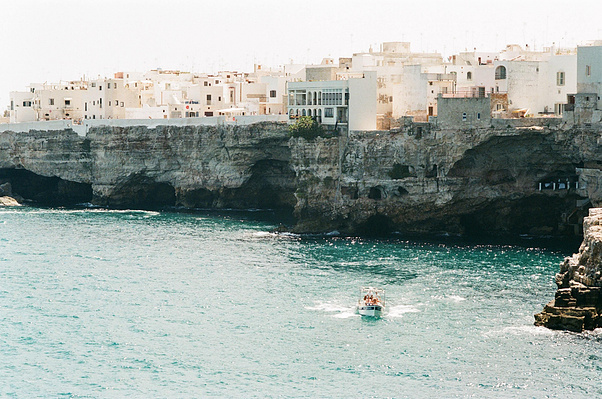
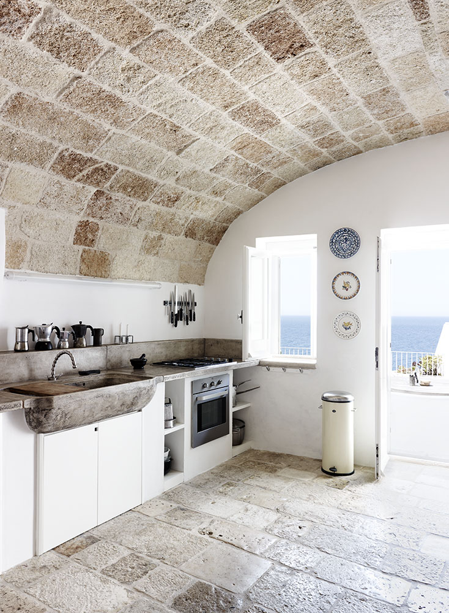

A beautiful ancient building on the cliffs with spectacular sea views facing the famous Grotta Palazzese of Polignano a Mare.
.jpg)
PALAZZO PENELOPE is a modern, quiet enclave located in Polignano a Mare. Upon arriving, you will find yourself in the company of the most primary of elements: sky, sea, sun, wind.
It has been carefully renovated in typical Apulian style, with vaulted tuff ceilings. The house has been tastefully restored by the best local Apulian craftsmen in local materials, and has been enriched by Scandinavian designer items and African art.
It is a sister property to Masseria Schiuma, which is a 20 minute drive away from the house.
THE DETAILS
The house is ideal for a group of friends and can host up to 4 couples/families where each couple has a private sleeping area. One double-room downstairs and 3 double rooms on the first floor on each side of the stairs.
In total 3 double rooms with sea view and one family room with a double bed and a queen size bed (sleeps 2 children) facing the street. The full house in 2 floors is available including the top terrace with a small dipping pool and sun-beds.
- · 10 guests
- · 4 bedrooms
- · 5 beds
- · 4.5 baths
PUGLIA

Italy’s heel, also known as the country’s pantry because of its red soil, rich produce and otherworldly herbs.
Thanks to its porous and mineral-rich limestone soil, proximity to the sea and scorching hot summers, Puglia is also where Italy’s most delicious food is produced. Bunches of herbs dusted with salt from the air; figs that thrive in sandy coastal fields; and peppers of heavenly sweetness. Fancy it is not, but bountiful it is.
PROPRIETORS
In 2011, Pernille and Lars Lembcke purchased Palazzo Penelope. As they got to know the area and started growing their own produce, they discovered facets of Puglia that deserve recognition not only within Italy, but around the world. That sparked an interest to cultivate, preserve and spread learnings from Puglia to the friends and guests around the world.

.jpg)
.jpg)